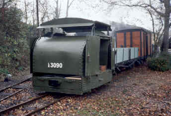

| The Trust's aim is to build a museum and a railway to display its collection of industrial narrow gauge equipment that has been gathered from various industries around the UK in the last 30 years, and in doing so we aim to educate and entertain both the general public and the railway enthusiast. An important aspect is that it should be a working museum, not simply a collection of static exhibits. |
The Industrial Narrow Gauge Railway is an unusual aspect of British Industrial Heritage that is now almost extinct. These small, self-contained railway systems were often hidden away from the general public and served such diverse industries as brickmaking, sewage works, munitions factories, mines, civil engineering and many more. |
The original Moseley Tramway was founded in 1968 as an experimental school project in Cheadle near Manchester using materials recovered from a local brickworks. Initially horse-drawn vehicles were used but later diesel, petrol and battery electric power were introduced. The Tramway was closed when the school required the land it occupied for development, leading to the collection being in storage for a number of years. |
The Trust now has a permanent home in the Apedale Country Park in Staffordshire alongside the Apedale Heritage Centre, where a railway is being constructed and a museum is planned. |
New members are always welcome and there are many opportunities not only to exploit existing skills but to learn completely new ones. |
|
AS SEEN ON TV!
|
Below is the Moseley locomotive shown on Channel 4 Television's "Salvage Squad". |
|  |